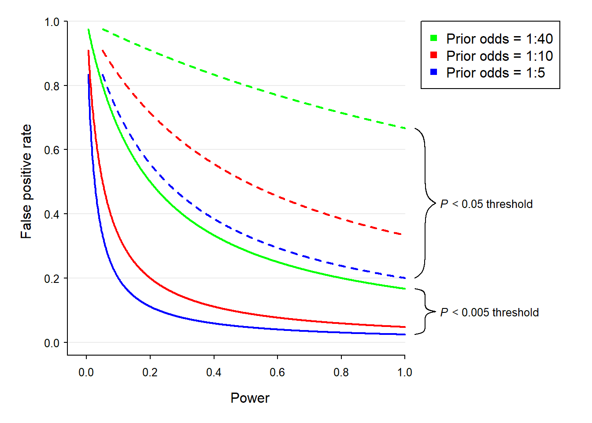

更嚴苛的標準能否打造嚴謹的科學？
為何要重新定義統計顯著水準？
就在今年七月下旬，來自重要的社會科學領域：有心理學、社會學、經濟學、政治學等，著作等身的72名資深學者。合作撰寫論文“Redefine statistical significance”，倡議從今天起，所有科學研究的統計顯著水準標準，從.005開始起算。經過一個多月的熱議，這篇論文已於九月一日被Nature Human Research正式接受。
這篇論文現世之前，使用統計檢定分析資料的研究者，在各自的專業領域內依靠有共識的水準，判斷結果是否符合預期或假設。像是心理學、教育界、以及許多醫療研究，採取多數學過統計者熟知的.05。公認是硬科學的高能物理研究，採用5個標準差之外的.000006做為顯著水準。雖然.005與.000006依然有不小的差距，比一般接受的.05是嚴苛十倍的標準。此倡議一出，立刻有新進學者表達，採此標準，會增加研究所的樣本(估計增加70%才能達到.005)，且不利新想法被人看見的意見。
提出這項倡議的主要目的是改善社會科學領域，充斥高比例偽陽性結果(false-positive results)的新奇研究現象。這類研究的特徵是研究想法有創意，設計符合最起碼的科學標準，但是分析結果只是剛好小於.05，而且尚未有可信的重現研究結果。這種研究非常有可能無法被重現，例如兩個月前我注意到的這一篇。Benjamin等72位學者倡議改成.005的重要理由，是如此能明顯降低偽陽性結果的，就像以下由這份論文再製的模擬結果。可以看到不論研究者事前對自己的理論能獲得研究結果支持的賠率(Prior Odds)有多高，整體而言.005的偽陽率比.05的偽陽率少了一半。

以上的推論是建立在貝氏統計的概念之上。Benjamin等人認為以事前賠率1:10的條件來看，設.05為顯著水準的研究結果貝氏因子(Bayes Factor)會落在2.4到3.4之間，.005為顯著水準的研究結果貝氏因子大約是13.9到25.7之間。統計學者Jeffreys Harold在影響深遠的著作“Theory of Probability”(機率的理論)，認為前者表示研究結果的證據力差強人意，後者代表有起碼可觀的證據力。有此論證與72位學者中有著名的貝氏統計提倡者，像是Zoltan Dienes、Eric-Jan Wagenmakers。我第一次看完這份倡議，就有這樣的主張真正目的，是不是想引導更多人改投貝氏統計的陣營？
蘊釀兩個月的另一種聲音
除了七月下旬起有一波個別學者透過私人部落格，發表支持與反對意見的浪潮。對.005主張有不同想法的學者，也在七月底於開放科學中心(Center for Open Science)主辦的SIPS研討會集結。會議結束後，由Daniel Lakens透過推特發起，集合88位世界各地的青壯世代為主的學者，一起透過網路協作，撰寫回應Benjamin等72位學者的評論“Justify your alpha”，預印本於本週一9/18正式投稿Nature Human Research並上網公開。
這份評論的基本立場是肯定必須採取消減偽陽性研究的措施，但是只從設定更嚴苛的統計顯著水準下手是不夠的。不同於Benjamin等人的主張只依賴數值模擬，Lakens等人評論以實際資料的分析做為佐證。就以研究的可再現性來說，從著名的2015年心理學再現研究專案來說，有40多份的原始研究p值是小於.005，但是只有一半能被成功再現。所以就實際的資訊來說，並不能真正有效降低偽陽性研究的產出。
採取更嚴苛的顯著水準並不只是改變解讀分析結果的標準而己，而是牽動研究工作裡的每一項操作。如一開始提到提高顯著水準，就要增加至少70%的樣本才能得到顯著結果，如此會同時提高原創研究與再現研究的成本。
對於大多數研究者來說，統計分析只是工具，在我所知道的亞洲學術圈。多數學者們的報告只有提供p值，採用更嚴格的統計水準主張，對主張內容不會深究的多數人來說，可能會想追求更小的p值，做為彰顯研究成果的價值。這應該與Benjamin等72位學者想提昇的科學研究嚴謹度，是背道而馳的局面。
微小的想法和建議
因為我與Daniel Lakens等作者有在SIPS親身交流的經歷，也在評論草稿初期就加入寫作，所以忝列為88名回應者之一。其中有許多有創作力與寫作高手，評論主體並未貢獻一詞。初版草稿之中有一段討論科學價值與研究操作的問題，我發現這段的草稿寫得太偏向數值分析，讓整篇評論的調性接近Benjamin等人的倡議。所以提出個人的修改建議，也很高興被其他作者接受，而成就了最後的完稿。
我在參與經驗中再次反思華人社會科學圈的科學操作問題：運用分析資料提出理論判斷的學者，是抱著多少的事前期待看待自已的理論。像Benjamin等人的倡議與Lakens等人的回應，都是設定相對低的事前賠率(最高1:10)，討論今後研究者該採取的最佳操作。在我成長的學術環境中，卻似乎存在對自己的研究理論有相當高的信心，如1:1。這或許與多數研究是借鑒已出版的西方研究有關，但是不論是普遍的信心還是可能的原因，都沒有實際的研究資料，我的感受只是個人臆測。然而我相信這是亞洲地區的開放科學人士可以做的研究題目，可藉此找到在這樣的學術環境推廣開放科學的切入點。
最後藉Benjamin等人的倡議與Lakens等人的回應，介紹預印發表。這種發表模式在資訊科學領域從1991年起，已運作將近30年。學者在初次投稿時，就將手稿與研究材料，上傳至有公信力的資料庫公開，如arXiv，期刊尚在評審時，讀者就能閱覽論文資料。社會科學領域也在1994年出現性質類似的SSRN，近年開放科學中心為推廣開放取用(Open Access)，也建置整合多項領域的OSF Preprints，包括屬於心理學的PsyArxiv。只要期刊允許，作者可自行於這些網站公開投稿。在今年的SIPS，我就得知美國心理學學會(APA)，已經接受PsyArxiv做為APA旗下期刊發表預印本主要平台的消息。我所知道的亞洲地區本土期刊還沒有開始這樣的政策，如果有那一國出現這樣的期刊，或者有規模的支持措施開始營運，該國會成為亞洲開放科學的領導國。